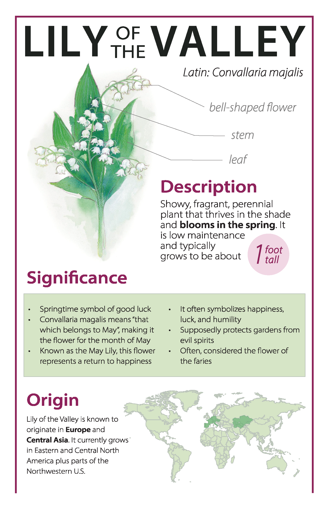
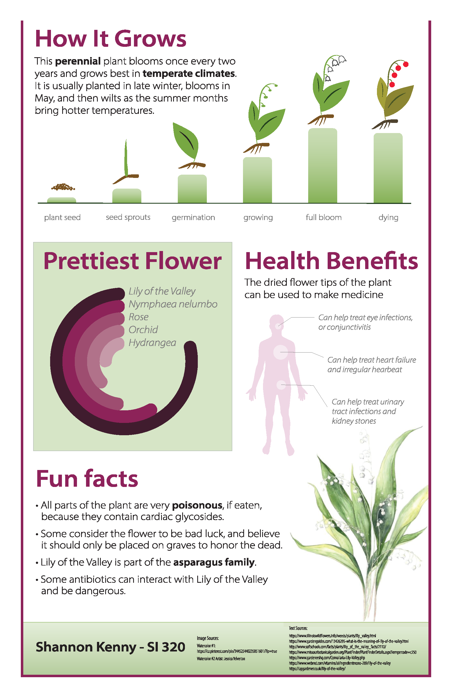

graphic design
Selected Graphic Design Projects

Lily of the Valley Infographic Project
I developed this infographic for a class project by choosing a topic (my favorite flower) and researching information about it, then deciding which pieces of information to keep and how to arrange the text around my chosen visuals to produce an elegant, sophisticated, readable layout.
Elements of this infographic include:
- Typography — I chose two main typefaces
- Color harmony — a soft, calming complementary color scheme
- Map and radial graph templates provided by my class, with groupings and colors manipulated to create the look I was going for
- A bar graph (top of the second page) I created by hand, plus two watercolor photos of the flower found online
1Cademy Animated Logo
I assisted with creating the final logo design for a platform called 1Cademy. We ultimately decided on two versions — one for Lightmode (on a light background) and one for Darkmode (on a dark background). The animation shown here, which appears while the webpage loads, was created by a different team member.
Project Gallery

Reference Materials
- Watercolor image source 1 (Pinterest)
- Text source (Illinois Wildflowers)
- Text source (Garden Guides)